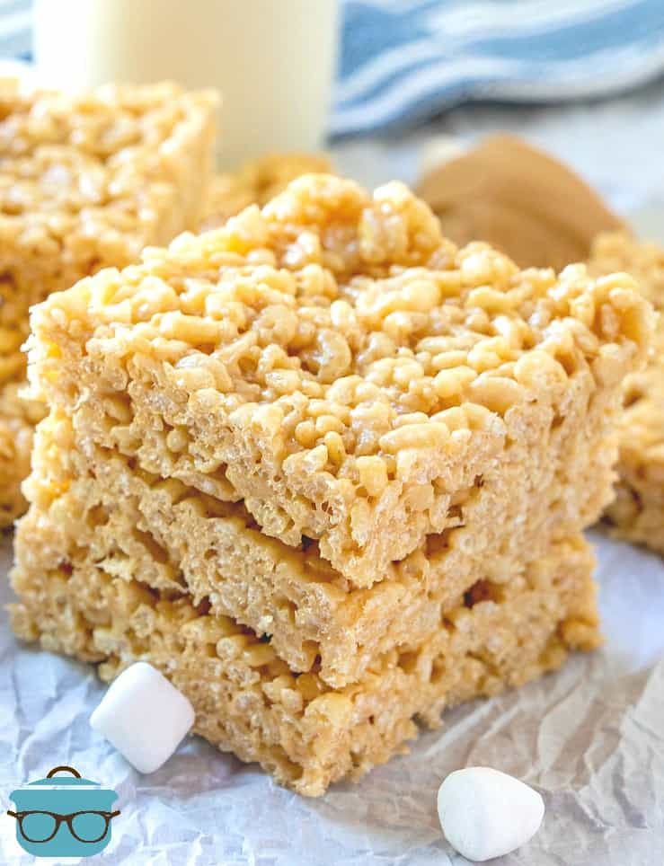

Peanut Butter Rice Kripsy Treats

PB rice Kripsy Treats
My Mom is a peanut butter nut (pun intended!) She loves peanut butter cookies and of course, she couldn’t pass up the chance to put peanut butter in Rice Krispies treats.
When you grow up eating things a certain way, you just become accustomed to it. So now, this is the only way I like to eat them.
I think my particular recipe for these is the absolute perfect balance between chewy and crunchy and peanut butter.
Ingredients
- Butter
- Mini marshmallows
- Creamy peanut butter
- Rice Krispies(Doesn't have to be name brand)
Step by step instructions
- Spray a 9″x 13″ (or 8 x 8″ for thicker bars) dish with nonstick cooking spray. In a 4 quart sauce pan, melt butter on low heat. Do this slowly, you don’t want burnt or brown butter here.
- Once butter has melted, keep heat on low and add mini marshmallows.
- Once marshmallows begin to soften and melt, add peanut butter.
- At this point, you will need to constantly stir the mixture so the peanut butter does not burn and the marshmallows can evenly melt (won’t take too long, about 5 minutes or so.)
- Once, mixture is combined and melted, turn off heat and remove pan from stove.
- Add Rice Krispies cereal to sauce pan and stir until evenly coated with mixture. This is sticky stuff so do your best to get it all combined.
- Add Rice Krispies cereal to sauce pan and stir until evenly coated with mixture. This is sticky stuff so do your best to get it all combined. Pour mixture into casserole dish (it will look very loose). Spray your hand with some nonstick cooking spray and pat down the mixture until firmly compacted.
- Allow 30-45 minutes for treats to set up.